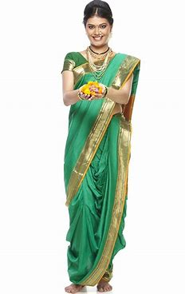
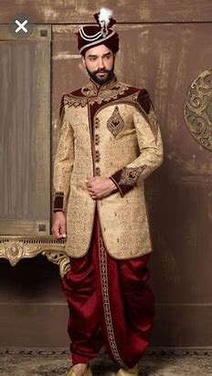

CLOTHES


Traditional male attire in Maharashtra includes the dhoti, also known as Dhotar,
and pheta, while a choli and nine-yard saree locally known as Nauwari saree or
Lugda is for women. Traditional attire is becoming rarer with trousers
and shirts for males and five yard saree or salawar khameej for females as the
popular replacements. The traditional attire is increasingly worn by Maharashtrians
only during special occasions and festivals. Marathi women also wear gajra or
veni made by flowers on their Maharashtra also has rich Jewellery.Jewellery such as
tanmani, bormal, ranihar, kolhapuri saaj, thushi wore on neck; bajuband on area of
hand above elbow;painjan wore on ankles; kudi, bugdi, kudka, vel, Bali on ears; Marathi
nath on nose; jodave on leg fingers.